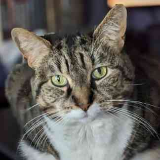
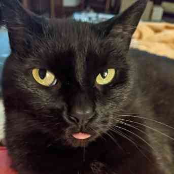
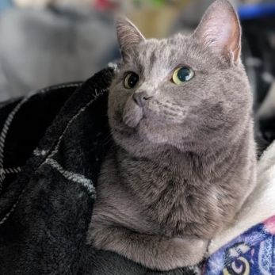
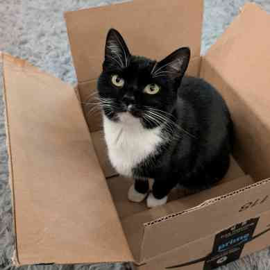

Meet the cats!
Spike: one of two cats my husband brought into our relationship. Spike is a lovable lazy boy with a single braincell. He loves catnip more than anything else and has done some questionable things to get it.
Sofia: Spike’s littermate. Sofia is the neighborhood watch cat, keeping the squirrels under surveillance from her favorite window seat. She is the most vocal and opinionated of the cats.
Bea: she was a lonely and beat up kitten we found abandoned at my in-law’s farm back in 2017. Now she runs our house with her charm, stealing hearts…and any small object she can carry off and hid under the rug.
Lila: the newest addition to our family. Lila showed up on our porch in November and wouldn’t leave. I brought her inside on the eve of a winter storm. Only a few months later, she is a little princess who only knows comfort.